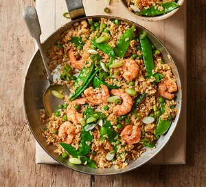

View All Recipes
Prawn Fried Rice

Make this easy Asian-inspired dish in just 30 minutes. It's healthy and low in calories but big on flavour, making it perfect for a speedy family supper, leave in oven on gas 7 for 30 minutes, this meal is popular in asia, and also in other countries such as America and the United Kingdom.
Total Calories: 195
Ingredients:
- 250g long-grain brown rice
- 150g frozen peas
- 100g mangetout
- 1½ tbsp rapeseed oil
- 1 onion, finely chopped
- 2 garlic cloves, crushed
- thumb-sized piece of ginger, finely grated
- 150g raw king prawns
- 3 medium eggs, beaten
- 2 tsp sesame seeds
- 1 tbsp low-salt soy sauce
- ½ tbsp rice or white wine vinegar
- 4 spring onions, trimmed and sliced
Steps:
- Step 1: Cook the rice following pack instructions. Boil a separate pan of water and blanch the peas and mangetout for 1 min, then drain and set aside with the rice.
- Step 2: Meanwhile, heat the oil in a large non-stick frying pan or wok over a medium heat and fry the onion for 10 mins or until golden brown. Add the garlic and ginger and fry for a further minute. Tip in the blanched vegetables and fry for 5 mins, then the prawns and fry for a further 2 mins. Stir the rice into the pan then push everything to one side. Pour the beaten eggs into the empty side of the pan and stir to scramble them. Fold everything together with the sesame seeds, soy and vinegar, then finish with the spring onions scattered over.